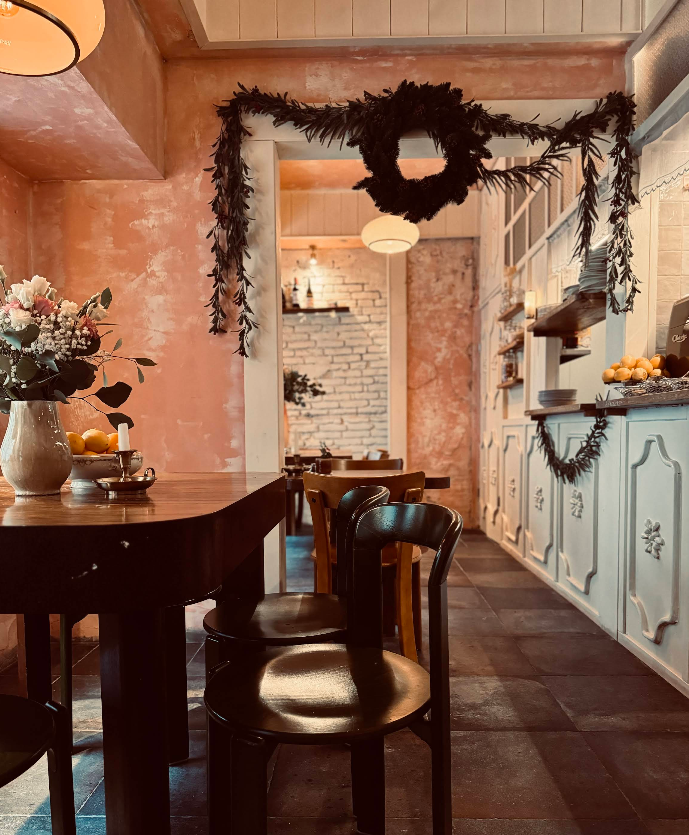

Polski obiad / nowoczesny sznyt / Warszawa
OMA
Domowe smaki podane lekko, sezonowo i bez pośpiechu. Mały lokal przy Radnej 13 z kuchnią, do której wraca się dla rosołu, pomidorowej i obiadu jak u babci, tylko trochę bardziej dopracowanego.
Sezonowa karta
Złoty standard obiadu
Kameralna sala
Dziś w OMA
Dzisiejszy obiad i szybka decyzja przed wizytą.
Strona sprawdza dzień tygodnia i pokazuje właściwy obiad, godziny oraz najkrótszą drogę do telefonu, menu i trasy.
Przegląd
Mała sala, konkretna kuchnia, krótka droga od stołu do talerza.
OMA najlepiej działa jako miejsce na obiad w środku dnia, szybkie spotkanie przy zupie albo spokojny deser po spacerze po Powiślu.
Na miejscu
Na wynos
4,7 / 5
